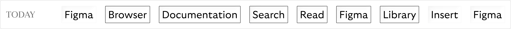
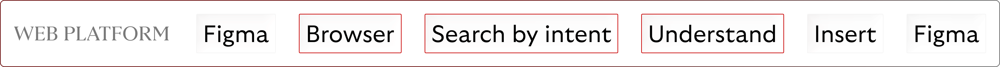
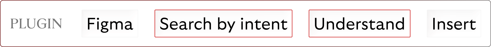
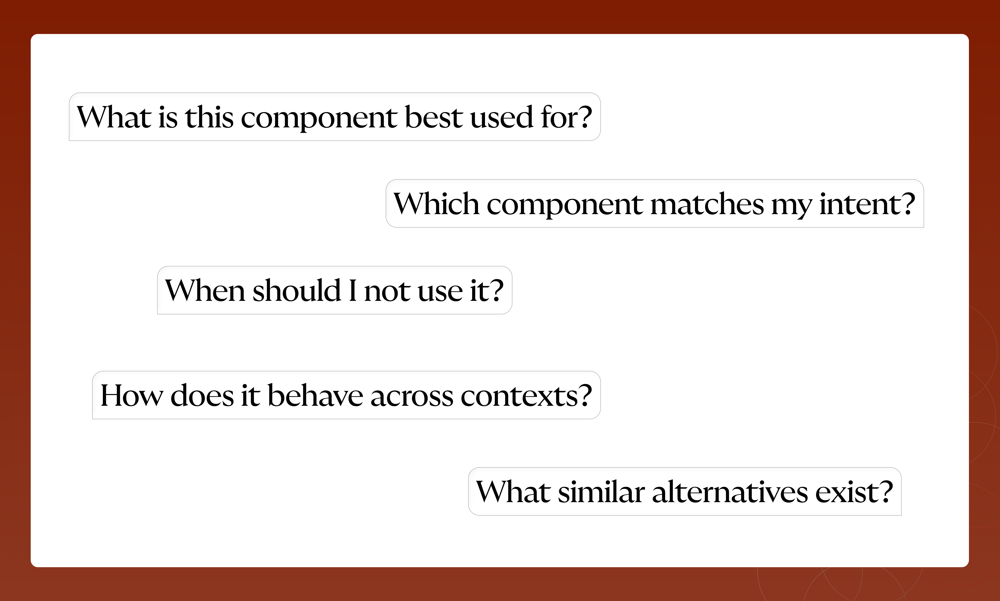
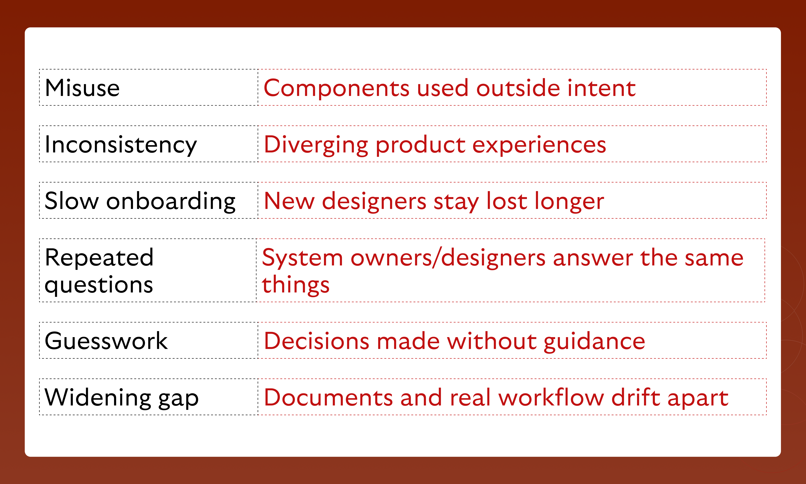
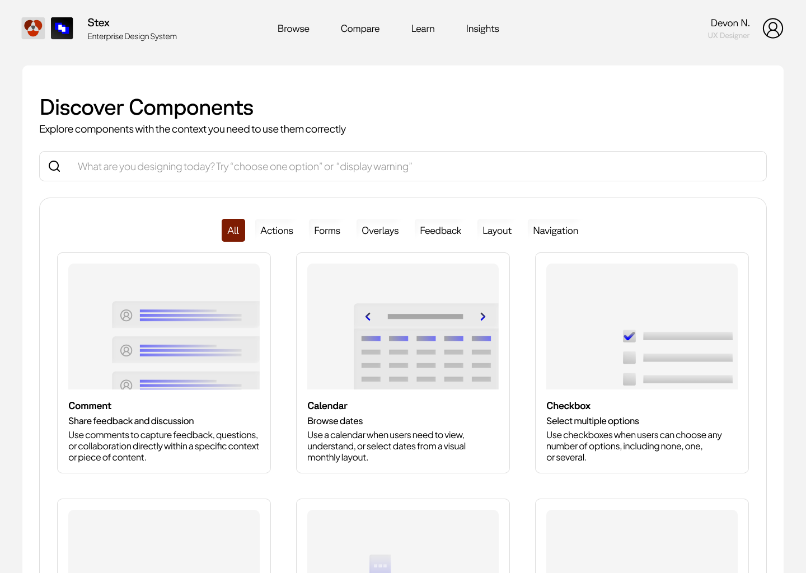
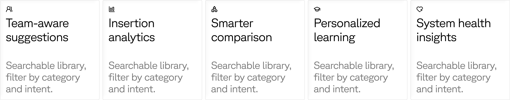

Accordant
A platform that helps teams discover, compare, and confidently use design system components — through intent-based search, structured guidance, and direct integration with Figma.

Accordant is a speculative product that sits between a design system and the designers who actually use it. It doesn't help author components or govern a library, it helps designers find the right component, understand it, and compare it against near-alternatives at the moment of choice.
The project spans concept, information architecture, and UI design, built around a fictional enterprise company called Stex with two active design systems.
Most of the time, choosing the right component is automatic. Designers focus on the flow, the user's mental model, and edge cases — components fall into place from memory.
But almost every designer hits moments where they need to check. And every check means leaving Figma, searching, reading, switching back, searching the library.
The same act of checking guidance, repeated across a project, becomes a tax on flow. Multiplied across a team, it becomes a tax on the system itself.

9 steps, 2 windows
3 less steps, with comprehensive understanding
5 less stepsDesigners may have access to a Figma library and documentation site — yet still struggle to answer the simplest question of all: which component should I use here?
They fall back on memory, scattered docs, or team knowledge. The gap is not access — it's informed access.


I coded 14 practitioner accounts published 2023–2026 using inductive thematic coding (Braun & Clarke). Eight recurring themes emerged.
Comparison is the missing primary view. Every platform sells to DS teams, but none is built for the consumer of a design system.
The browser supports depth, documentation, and onboarding. The plugin supports in-context action.

Search → Understand → Compare → Choose → Insert
The walkthrough below is set inside Stex, a fictional enterprise stack used as a working context for the prototype.
Whether your design system is documented or just lived-in, Accordant meets you where you are.
For teams with existing documentation.
Connect Figma + your existing documentation. Accordant pulls components from Figma and structures your guidance against them.
For teams without formal documentation yet.
Connect Figma only. Accordant generates initial drafts of intent, usage, and comparisons — team refines from there.
A designer searching "display warning" should not need to know the word "alert" beforehand — and can learn the names after.
Each component opens to a structured page with core guidance for everyone, every time — and advanced guidance for deeper, contextual work.
Comparison is treated as a primary surface, not a footnote. Place two confusable components side-by-side and see how their intent, behavior, and rules differ.
Onboarding paths, system principles, and curated learning sequences embedded in the same surface designers already use to choose components.
For fast in-context action: search by intent inside Figma, see recommended components ranked against your query, view quick use-case guidance, and insert the best-fit component without leaving the file.
Designers don't lack access — they lack a structural surface for the decision they're already making. Accordant treats comparison as the primary view, not an afterthought, and meets the work where it actually happens: inside Figma.
If Figma libraries make components accessible, Accordant's job is to make them understandable — and to teach by use, not by document.

Sté is short for Steven — and it's a small wink at stay. It's the thread running through my work: design that invites people to stay engaged, art that holds attention, fragrances that linger long after the wearer leaves the room. Welcome. Sté with me a while.